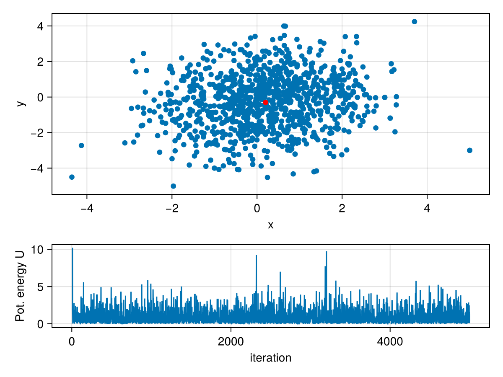
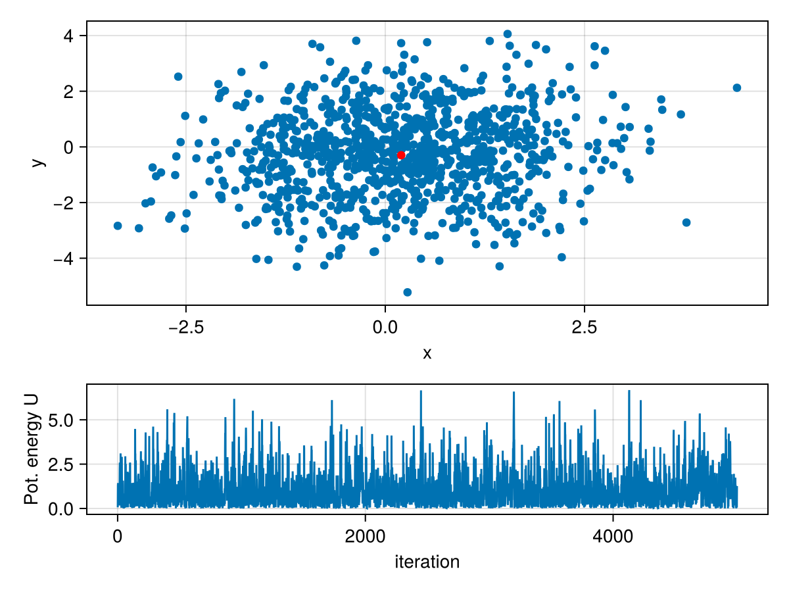
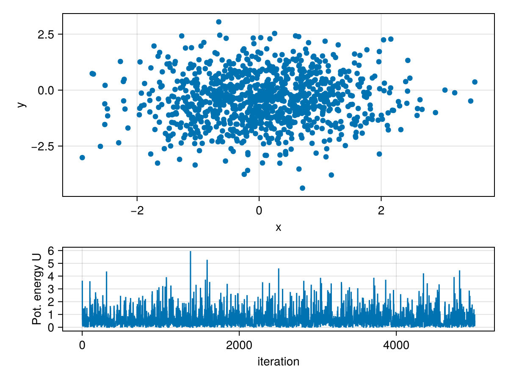

MCSamplers
Quick overview
MCSamplers contains sampling algorithms to solve inverse problems. It focuses mainly on the Hamiltonian Monte Carlo (HMC) algorithm and its variants. Currently the following samplers are implemented:
- the "standard" HMC algorithm with optional constraints as described in [4] and [5], and
- the No U-Turn (NUTS) algorithm as described in [8].
- the Extended Metropolis algorithm as described in [9].
See the User guide section for an explanation of the basics of MCSamplers and some minimal usage examples.
Theoretical background
Probabilistic approach to inverse problems
In the probabilistic approach, an inverse problem essentially represents an indirect measurement where the knowledge about the observed data and model parameters is completely expressed in terms of probabilities [1]. Within such formalism, the general solution to the inverse problem is a probability density function (PDF), i.e., the posterior PDF (see [1] and [2] for a detailed explanation). Typically, the posterior PDF cannot be computed analytically, therefore sampling methods come into play. The result is thus not a single ``optimal'' model, but a collection of plausible models which may feature significant differences while they are generally able to explain the observed data and are compatible with the prior information. This reflects the nature of the inverse problem: if different scenarios are plausible from the point of view of the observed data, then the probabilistic solution will aim at reflecting that.
The posterior PDF is constructed from the combination of two pieces of separate information: 1) the prior knowledge on the model parameters, expressed by the PDF $\rho(\mathbf{m})$, where $\mathbf{m}$ represents the model parameters and 2) the information provided by the experiment, described by $L(\mathbf{m})$. The posterior distribution, under certain fairly wide assumptions, is then given by [2] [3]:
\[\begin{align} \sigma(\mathbf{m}) = k \, \rho(\mathbf{m}) \, L(\mathbf{m}). \end{align}\]
Since $\sigma(\mathbf{m})$ is a PDF, it requires to evaluate the relevant integrals to find features of interest. For example, calculating the expected model given the data requires evaluating the following integral
\[\begin{equation} \mathbb{E} \left[ \mathbf{m} \right] = \int_{M} \mathbf{m} \, \sigma(\mathbf{m}) \, \mathrm{d}\mathbf{m}, \end{equation}\]
where $M$ represents the whole model space.
Finally, to calculate some arbitrary function $\phi(\mathbf{m})$ of $\mathbf{m}$, we can use the following relationship once we have obtained a collection of samples from the posterior distribution:
\[\begin{equation} \int_{\mathrm{M}} \phi(\mathbf{m}) \sigma(\mathbf{m}) \, \mathrm{d} \mathbf{m} \approx \frac{1}{N} \sum_{i=1}^N \phi(\mathbf{m}_{(i)}) \end{equation}\]
where $N$ is the number of available samples
Basic HMC algorithm
HMC constructs a Markov chain over an $n$-dimensional probability density function $\sigma(\mathbf{m})$ using classical Hamiltonian mechanics. The algorithm regards the current state $\mathbf{m}$ of the Markov chain as the location of a physical particle in an $n$-dimensional space $\mathcal{M}$ (i.e., model or parameter space). It moves under the influence of a potential energy, $U$, which is defined as
\[\begin{align} U(\mathbf{m})=-\ln{ \left( \sigma(\mathbf{m}) \right) }. \end{align}\]
To complete the physical system, the state of the Markov chain needs to be artificially augmented with momentum variables $\mathbf{p}$ and a generalized mass for every dimension pair. The collection of resulting masses is contained in a positive definite mass matrix $\mathbf{M}$ of dimension $n \times n$. The momenta and the mass matrix define the kinetic energy of the particle as
\[\begin{align} K(\mathbf{p})=\frac{1}{2} \mathbf{p}^T \mathbf{M}^{-1} \mathbf{p}. \end{align}\]
In the HMC algorithm, the momenta $\mathbf{p}$ are drawn randomly from a multivariate Gaussian with covariance matrix $\mathbf{M}$ (the mass matrix). The sum of the location-dependent potential and momentum-dependent kinetic energy constitute the total energy, or Hamiltonian, of the system
\[\begin{align} H(\mathbf{m},\mathbf{p})=U(\mathbf{m})+K(\mathbf{p}). \end{align}\]
The Hamiltonian dynamics are governed by the following equations,
\[\begin{align} \frac{\partial\mathbf{m}}{\partial\tau} = \frac{\partial H}{\partial\mathbf{p}},\quad \frac{\partial\mathbf{p}}{\partial\tau} = - \frac{\partial H}{\partial\mathbf{m}} \, , \end{align}\]
which determine the position of the particle as a function of time $\tau$. This time $\tau$ is artificial just like the mass matrix, it has no connection to the actual physics of the inverse problem at hand.
We can simplify Hamilton's equations using the fact that kinetic and potential energy depend only on momentum and location, respectively, to obtain
\[\begin{align} \frac{\partial\mathbf{m}}{\partial\tau} = \mathbf{M}^{-1} \mathbf{p}, \quad \frac{\partial\mathbf{p}}{\partial\tau} = - \frac{\partial U}{\partial\mathbf{m}} \, . \end{align}\]
Evolving $\mathbf{m}$ over time $\tau$ generates another possible state of the system with new position $\mathbf{\tilde{m}}$, momentum $\mathbf{\tilde{p}}$, potential energy $\tilde{U}$, and kinetic energy $\tilde{K}$. Due to the conservation of energy, the Hamiltonian is equal in both states, i.e., $U+K = \tilde{U} + \tilde{K}$. Successively drawing random momenta and evolving the system generates a distribution of the possible states of the system. Thereby, HMC samples the joint momentum and model space, referred to as phase space. As we are not interested in the momentum component of phase space, we marginalize over the momenta by simply dropping them. This results in samples drawn from $\sigma(\mathbf{m})$.
If one could solve Hamilton's equations exactly, every proposed state (after burn-in) would be a valid sample of $\sigma(\mathbf{m})$. Since Hamilton's equations for non-linear forward models cannot be solved analytically, the system must be integrated numerically. Suitable integrators are symplectic, meaning that time reversibility, phase space partitioning and volume preservation are satisfied [4][5]. We employ the leapfrog method as described in [4]. However, the Hamiltonian is generally not preserved exactly when explicit time-stepping schemes are used (e.g., [6]). Therefore, the time evolution generates samples not exactly proportional to the original distribution. A Metropolis-Hastings correction step is therefore applied at the end of numerical integration.
In summary, at each iteration, samples are generated starting from a randomly drawn model $\mathbf{m}$ in the following way:
- $\mathbf{p}$ according to the Gaussian with mean $\mathbf{0}$ and covariance matrix $\mathbf{M}$;
- Compute the Hamiltonian $H$ of model $\mathbf{m}$ with momenta $\mathbf{p}$;
- Propagate $\mathbf{m}$ and $\mathbf{p}$ for some time $\tau$ to $\tilde{\mathbf{m}}$ and $\tilde{\mathbf{p}}$, using the discretized version of Hamilton's equations and a suitable numerical integrator;
- Compute the Hamiltonian $\tilde{H}$ of model $\tilde{\mathbf{m}}$ with momenta $\mathbf{\tilde{p}}$;
- Accept the proposed move $\mathbf{m} \rightarrow \tilde{\mathbf{m}}$ with probability $p_\text{accept} = \min \left( 1, \exp ( H-\tilde{H} ) \right)\,.$
- If accepted, use (and count) $\tilde{\mathbf{m}}$ as the new state. Otherwise, keep (and count) the previous state. Then return to point 1.
The mass matrix $\mathbf{M}$ is one of the important tuning parameters of the HMC algorithm; details on its meaning and suggestions for tuning can be found in [5][7]. Moreover, employing the discrete leapfrog integrator implies that there are two additional parameters that need to be tuned, namely the time step $\epsilon$ and the number of iterations $L$ [4].
User guide
Monte Carlo simulations
All kinds of simulations are started using the function runMC. The arguments passed to runMC determine which algorithm will be used, number of iterations, the output files, etc.. The signature of the function is:
runMC(
pars::Dict,
MCpar::AbstractMCParams,
mstart::Vector{Float64};
likelihood,
prior
)The argument pars is a dictionary containing a set of generic parameters for the simulation, such as the maximum number of iterations, the name of the simulation, the directory used to write the output, etc. See the documentation of runMC for more details. The argument MCparis a Julia structure which depends on the algorithm intended to be employed. Its type, in fact, determines which algorithm will be used to perform the sampling. As such, the parameters that need to be specified for each algorithm are different, and so the "fields" of the MCpar structure. Currently the following AbstractMCParams structures (types) are defined:
HMCParamsfor the "standard" HMC algorithm with optional constraints as described in [4] and [5];NUTSParamsfor the No U-Turn (NUTS) algorithm as described in [8];ExtMetropParamsfor the Extended Metropolis algorithm as described in [9].
See their documentation for details. The argument mstart is a vector containing the starting model for the simulation. The model has to be in the form of a 1D vector for the computations to work, i.e., physically 3D models need to be "unrolled" to 1D. The last two arguments, likelihood and prior are related to the two PDFs composing the posterior PDF as seen above, i.e., the prior PDF $\rho(\mathbf{m})$ and the likelihood PDF $L(\mathbf{m})$. However, likelihood and prior refer in practice to the negative logarithm of those, namely $- \ln( \rho(\mathbf{m}))$ and the likelihood PDF $- \ln (L(\mathbf{m})$.
Once the above parameters have been set, the simulation can be started by issuing, for instance, something like
runMC(pars,MCpar,mstart,likelihood=mylikelihood,prior=myprior)Output
The output of a simulation is written to two files:
<name of the simulation>_inp.jld2, and<name of the simulation>_outp.h5.
The first file contains all the input parameters of the simulation which completely specify the problem under study. These include the prior and likelihood models, the generic simulation parameters, etc. Such file is saved in the .jld2 format (using the package JLD2), which is a HDF5-compatible format capable of saving the Julia structures and retrieving them later on. The second file contains mainly the results of the simulation, namely the saved models, some statistical info, etc.. Such file is saved in the .h5 format (using the package HDF5).
The full output can be read and saved in an appropriate structure by using the function readMCoutput. The signature of this function is
readMCoutput(
datadir::String,
simname::String;
istart,
iend
) The argument datadir specifies the directory in which the output is saved and simname the name of the simulation. The optional parameters istart and iend specify which subset of the saved models to retrieve.
Interrupting and continuing simulations
This package allows you to interrupt the simulation at any time by simply killing the Julia process. That should not create problems to the output files even in case of a crash of the program. The output files can then be used to continue (or re-start) the simulation from the point where it was interrupted by using the function contrunMC. This function needs as the first argument a dictionary containing the generic simulation parameters (see above). Moreover, this function allows for a continuation using the same exact parameters used before or, by additionally passing a new instance of AbstractMCParams of the appropriate type (e.g., a HMCParams struct) to continue the previous simulation with new algorithm-specific parameters.
The output files are written using the Single Writer Multiple Reader (SWMR) capabilities of the HDF5 file format, so it is easy while the simulation is running to launch a different Julia instance and, from there, to plot or analyze the results so far. The SWMR will guarantee that only the initial process will the able to write to the file, while allowing others to read the data.
Finally, in case the output file containing the saved models gets corrupted because of wrong HDF5 "status flags", the function clear_stflags_hdf5 provides a way to clear them and then continue the simulation using contrunMC.
Example 1: Sampling a 2D Gaussian with the "standard" HMC algorithm
In the following we show a simple example of how to construct a custom problem and run MCSamplers to sample the target distribution. In this case we aim at sampling a simple 2D Gaussian probability density function (PDF), which corresponds to having a Gaussian likelihood function and a forward model which is simply the identity matrix. In other words, the forward model is given by
\[\mathbf{G} = \begin{bmatrix} 1 & 0 \\ 0 & 1 \end{bmatrix} \, .\]
while the misfit function (negative logarithm of the PDF) by
\[U(\mathbf{m}) = \frac{1}{2} \, (\mathbf{G} \mathbf{m}-\mathbf{d})^{\mathrm{T}} \mathbf{C}_{\mathrm{D}}^{-1} (\mathbf{G} \mathbf{m}-\mathbf{d}) \, ,\]
where $\mathbf{m}$ are the model parameters (the unknowns) and $\mathbf{d}$ the vector of observed (or measured) data, i.e., in this example, the mean of the Gaussian PDF.
First we load some needed packages
using LinearAlgebra
using InverseAlgos.MCSamplers # sampling algos
using CairoMakie # for plottingThen the problem to solve is defined by using a custom type (struct) named GaussProb:
struct GaussProb
mean::Vector
invcov::Matrix
function GaussProb(mean,invcov)
@assert isposdef(invcov)
@assert issymmetric(invcov)
return new(mean,invcov)
end
endThe above defines a structure (type) which contains two fields: mean, representing the mean of the Gaussian pdf and invcov, representing the inverse of the covariance matrix (i.e., the precision matrix). These two pieces of information completely specify our problem.
We now need to provide functions to compute the value of the negative logarithm of probability density function, i.e, $U(\mathbf{m})$, and its gradient with respect to the model parameters $\mathbf{m}$. To do so, we make the struct callable (sometimes called a "functor") with a function that computes either the negative natural logarithm of the pdf or the gradient of the latter for an input vector x depending on the value of the argument kind:
function (gp::GaussProb)(x,kind)
if kind==:nlogpdf
# negative logarithm of the pdf
dif = x .- gp.mean
pd = 1/2 * dot(dif, (gp.invcov * dif))
return pd
elseif kind==:gradnlogpdf
# gradient of neg. log. of the pdf
gra = gp.invcov * x
return gra
else
error("Wrong argument 'kind'. It can be either ':nlogpdf' or ':gradnlogpdf'.")
end
endAn important thing here is that in order to use the above function with MCSamplers the signature of the function must be (x::Vector{<:Real},kind::Symbol) where x is a vector and kind is a Symbol. Moreover the only possible values for kind are either :nlogpdf which evaluates the negative logarithm of the likelihood functional or :gradnlogpdf which computes its gradient.
Computing the value of the negative logarithm of the pdf and its gradient it is all that is needed for setting up a HMC inversion (except for additional tuning parameters). Computing the negative logarithm of the pdf essentially corresponds to evaluating the misfit functional.
We now define the values for the mean (representing the observed data $\mathbf{d}$ and inverse covariance $\mathbf{C}_{\mathrm{D}}^{-1}$ and instantiate our likelihood model:
mea = [0.2,-0.3] # then mean value
invcov = inv([1.5 0.2; 0.2 2.3]) # the inverse covariance matrix
likelihood = GaussProb(mea,invcov) # instantiate a GaussProb structNext we set up the HMC simulation (sampling) by first defining the starting model and the parameters needed for HMC. We define the starting model as
mstart = [5.0,-3.0]and the precision matrix as a diagonal one
imM = Diagonal(1.0*I,length(mstart))
LchoM = cholesky(inv(imM)).L
@show imM
@show LchoMimM = [1.0 0.0; 0.0 1.0]
LchoM = [1.0 0.0; 0.0 1.0]Now we need to set the parameters relative to the chosen HMC algorithm, in this case the plain version of HMC. Moreover, we need to define whether the model parameters will be constrained or not (false in our case), the values for ϵ (type \epsilon-TAB in Julia) and L, i.e., the step length and number of iterations for the leap-frog integration
constrained = false
ϵ = 0.25
L = 10We thus set all the needed parameters for a "standard" HMC simulation, therefore we can instantiate the HMCParams structure
hmcpars = HMCParams(invmassM=imM,
LcholmassM=LchoM,
constrained=constrained,
ϵ=ϵ,
L=L)The type of the above structure also defines the algorithm that will be used for sampling, i.e., HMCParams implies the use of the classic HMC algorithm, while, e.g., NUTSParams implies the use of the NUTS algorithm.
Finally, we can set in a dictionary the general parameters about the simulation, i.e., the simulation name, the maximum number of iterations, the output directory, etc..
pars = Dict()
pars["simname"] = "gauss1" # simulation name
pars["maxiter"] = 5000 # maximum number of iterations
pars["outdir"] = "results" # output directory
pars["saveevery"] = 5 # save every 2 models to disk, e.g., thinning the chain
pars["infoevery"] = 500 # print info every 10 iterationsWe can now start the simulation using the generic function runMC:
runMC(pars,hmcpars,mstart,likelihood=likelihood)
====================================
Hamiltonian Monte Carlo
====================================
Running simulation gauss1
Initial Ucur: 10.134
Iter.#: 1 Acc.: 0.00% Ucur: 10.134 ELA: 0h:0m:1s ETA: 1h:37m:53s
Iter.#: 500 Acc.: 77.80% Ucur: 1.222 ELA: 0h:0m:1s ETA: 0h:0m:15s
Iter.#: 1000 Acc.: 81.50% Ucur: 0.132 ELA: 0h:0m:1s ETA: 0h:0m:7s
Iter.#: 1500 Acc.: 81.13% Ucur: 1.641 ELA: 0h:0m:2s ETA: 0h:0m:5s
Iter.#: 2000 Acc.: 81.45% Ucur: 1.019 ELA: 0h:0m:2s ETA: 0h:0m:4s
Iter.#: 2500 Acc.: 82.12% Ucur: 0.425 ELA: 0h:0m:3s ETA: 0h:0m:3s
Iter.#: 3000 Acc.: 82.80% Ucur: 1.168 ELA: 0h:0m:4s ETA: 0h:0m:3s
Iter.#: 3500 Acc.: 83.14% Ucur: 0.678 ELA: 0h:0m:5s ETA: 0h:0m:2s
Iter.#: 4000 Acc.: 82.85% Ucur: 1.687 ELA: 0h:0m:7s ETA: 0h:0m:1s
Iter.#: 4500 Acc.: 82.53% Ucur: 0.209 ELA: 0h:0m:8s ETA: 0h:0m:0s
Iter.#: 5000 Acc.: 82.22% Ucur: 0.350 ELA: 0h:0m:10s ETA: 0h:0m:0s
End of main loop. Saved 1001 models.
====================================We can load the full results of the simulation (using readMCoutput), which will store the outputs in a structure of type MCSamplers.HMCOutput. See the documentation of MCSamplers.HMCOutput for an exaplanation of the various fields.
outhmc = readMCoutput("results","gauss1")InverseAlgos.MCSamplers.HMCOutput("results", "gauss1", [5.0, -3.0], "36d1e464-b701-11ef-1c8d-31c51afaf335", InverseAlgos.MCSamplers.NLogPostPDF(Reconstruct@GaussProb(Any[[0.2, -0.3], [0.6744868035190615 -0.05865102639296188; -0.05865102639296188 0.43988269794721413]]), nothing, Union{Missing, Float64}[0.0, missing]), InverseAlgos.MCSamplers.HMCParams(false, "", [1.0 0.0; 0.0 1.0], [1.0 0.0; 0.0 1.0], false, nothing, nothing, 0.25, 10, 1, :plainHMC), nothing, [1, 2, 3, 4, 5, 6, 7, 8, 9, 10 … 4991, 4992, 4993, 4994, 4995, 4996, 4997, 4998, 4999, 5000], [1, 5, 10, 15, 20, 25, 30, 35, 40, 45 … 4955, 4960, 4965, 4970, 4975, 4980, 4985, 4990, 4995, 5000], [5.0 5.0 … -1.2082624435424805 -0.38199254870414734; -3.0 -3.0 … 1.5931962728500366 0.6612434387207031], [0, 0, 0, 0, 0, 0, 0, 0, 1, 2 … 4103, 4103, 4104, 4105, 4106, 4107, 4108, 4109, 4110, 4111], [10.13357771260997, 10.13357771260997, 10.13357771260997, 10.13357771260997, 10.13357771260997, 10.13357771260997, 10.13357771260997, 10.13357771260997, 5.707768374821393, 1.7577919693485007 … 1.2809473167663357, 1.2809473167663357, 2.4772819802857944, 0.6461907964656421, 1.613504726360874, 0.08330881853243452, 0.17095507171958624, 1.2806457352678031, 0.5345810712641523, 0.3502644213674375], [10.13357771260997, 10.13357771260997, 10.13357771260997, 10.13357771260997, 10.13357771260997, 10.13357771260997, 10.13357771260997, 10.13357771260997, 5.707768374821393, 1.7577919693485007 … 1.2809473167663357, 1.2809473167663357, 2.4772819802857944, 0.6461907964656421, 1.613504726360874, 0.08330881853243452, 0.17095507171958624, 1.2806457352678031, 0.5345810712641523, 0.3502644213674375], nothing, [10.13357771260997, 10.13357771260997, 1.7577919693485007, 0.48391180129660205, 0.4333106416208611, 0.5021235166563736, 1.46127900703677, 1.029844687172195, 1.670682898038779, 0.4937836228838675 … 1.5547151884365338, 0.549939113152558, 0.10350519107025924, 1.3809685698099452, 0.3157779541135116, 1.2423290104163518, 0.9346692469876763, 1.2809473167663357, 1.613504726360874, 0.3502644213674375], nothing)Now we can plot some quantities of interest. As a very simple example, here we plot the values of the samples $\mathbf{m}$ as $(x,y)$ coordinates and the potential energy (misfit) as a function of iterations.
userprob = outhmc.userprob
mods = outhmc.mods
iter = outhmc.iter
ucur = outhmc.ucur
fig = Figure()
ax1 = Axis(fig[1:2,1],xlabel="x",ylabel="y")
scatter!(ax1,mods[1,:],mods[2,:])
scatter!(ax1,mea[1],mea[2],color="red")
ax2 = Axis(fig[3,1],xlabel="iteration",ylabel="Pot. energy U")
lines!(ax2,iter,ucur)
fig
Example 2: Sampling a 2D Gaussian with the NUTS algorithm
Firstly, we repeat the same initial steps than above to set up the problem.
using LinearAlgebra
using InverseAlgos.MCSamplers # sampling algos
using CairoMakie # for plotting
struct GaussProb
mean::Vector
invcov::Matrix
function GaussProb(mean,invcov)
@assert isposdef(invcov)
@assert issymmetric(invcov)
return new(mean,invcov)
end
end
function (gp::GaussProb)(x,kind)
if kind==:nlogpdf
# negative logarithm of the pdf
dif = x .- gp.mean
pd = 1/2 * dot(dif, (gp.invcov * dif))
return pd
elseif kind==:gradnlogpdf
# gradient of neg. log. of the pdf
gra = gp.invcov * x
return gra
else
error("Wrong argument 'kind'. It can be either ':nlogpdf' or ':gradnlogpdf'.")
end
endWe define the observed data, i.e., mean value in this case, the inverse of the covariance function, instantiate the GaussProb and define the starting model.
mea = [0.2,-0.3] # then mean value
invcov = inv([1.5 0.2; 0.2 2.3]) # the inverse covariance matrix
likelihood = GaussProb(mea,invcov) # instantiate a GaussProb struct
mstart = [0.0,-3.0]This time we intend to use the NUTS algorithm, so we start by defining the required parameters for the struct NUTSParams as follows
imM = Diagonal(1.0*I,length(mstart)) # inverse of the mass matrix
LchoM = cholesky(inv(imM)).L # lower triangular matrix from Cholesky decomposition of the mass matrix
constrained = false # constrained problem?
δ = 0.65 # target acceptance rate for dual averaging
Δmax = 1000.0 # maximum change in the Hamiltonian value
niteradapt = 500 # number of iterations for adaptation
ϵmax = 0.25 # maximum value for ϵ (type \epsilon TAB in Julia)
maxtreeheight = 4 # maximum height of the balanced tree for NUTSSee the documentation for NUTSParams for more details. Now we instantiate a NUTSParams structure:
hmcpars = NUTSParams(invmassM=imM,
LcholmassM=LchoM,
constrained=constrained,
δ=δ,
Δmax=Δmax,
niteradapt=niteradapt,
ϵmax=ϵmax,
maxtreeheight=maxtreeheight )InverseAlgos.MCSamplers.NUTSParams(false, "", [1.0 0.0; 0.0 1.0], [1.0 0.0; 0.0 1.0], false, nothing, nothing, 0.65, 1000.0, 500, 0.25, 1, :NUTS, :velocity, 4, InverseAlgos.MCSamplers.AvEpsFromHMCIter(20))Now set in a dictionary the general parameters about the simulation
pars = Dict()
pars["simname"] = "gauss2" # simulation name
pars["maxiter"] = 5000 # maximum number of iterations
pars["outdir"] = "results" # output directory
pars["saveevery"] = 5 # save every 2 models to disk, e.g., thinning the chain
pars["infoevery"] = 500 # print info every 10 iterationsand then run the simulation using NUTS
runMC(pars,hmcpars,mstart,likelihood=likelihood)
====================================
NUTS (dynamic HMC)
====================================
Running simulation gauss2
Initial 'reasonable' ϵ: 0.125
Initial Ucur: 1.585
Iter.#: 1 Acc.: 100.00% Ucur: 0.065 ELA: 0h:0m:0s ETA: 0h:48m:47s
Iter.#: 500 Acc.: 99.60% Ucur: 0.479 ELA: 0h:0m:0s ETA: 0h:0m:6s
Iter.#: 1000 Acc.: 99.40% Ucur: 0.709 ELA: 0h:0m:0s ETA: 0h:0m:3s
Iter.#: 1500 Acc.: 99.40% Ucur: 0.104 ELA: 0h:0m:1s ETA: 0h:0m:2s
Iter.#: 2000 Acc.: 99.45% Ucur: 0.253 ELA: 0h:0m:1s ETA: 0h:0m:2s
Iter.#: 2500 Acc.: 99.56% Ucur: 0.598 ELA: 0h:0m:2s ETA: 0h:0m:2s
Iter.#: 3000 Acc.: 99.50% Ucur: 0.233 ELA: 0h:0m:3s ETA: 0h:0m:2s
Iter.#: 3500 Acc.: 99.49% Ucur: 1.655 ELA: 0h:0m:4s ETA: 0h:0m:2s
Iter.#: 4000 Acc.: 99.50% Ucur: 0.014 ELA: 0h:0m:6s ETA: 0h:0m:1s
Iter.#: 4500 Acc.: 99.51% Ucur: 0.924 ELA: 0h:0m:8s ETA: 0h:0m:0s
Iter.#: 5000 Acc.: 99.50% Ucur: 1.263 ELA: 0h:0m:10s ETA: 0h:0m:0s
End of main loop. Saved 1001 models.
====================================Load the full results using readMCoutput
outhmc = readMCoutput("results","gauss2")InverseAlgos.MCSamplers.HMCOutput("results", "gauss2", [0.0, -3.0], "42e4bc40-b701-11ef-1caa-13a53ccd36d7", InverseAlgos.MCSamplers.NLogPostPDF(Reconstruct@GaussProb(Any[[0.2, -0.3], [0.6744868035190615 -0.05865102639296188; -0.05865102639296188 0.43988269794721413]]), nothing, Union{Missing, Float64}[0.0, missing]), InverseAlgos.MCSamplers.NUTSParams(false, "", [1.0 0.0; 0.0 1.0], [1.0 0.0; 0.0 1.0], false, nothing, nothing, 0.65, 1000.0, 500, 0.25, 1, :NUTS, :velocity, 4, InverseAlgos.MCSamplers.AvEpsFromHMCIter(20)), nothing, [1, 2, 3, 4, 5, 6, 7, 8, 9, 10 … 4991, 4992, 4993, 4994, 4995, 4996, 4997, 4998, 4999, 5000], [1, 5, 10, 15, 20, 25, 30, 35, 40, 45 … 4955, 4960, 4965, 4970, 4975, 4980, 4985, 4990, 4995, 5000], [0.5524017214775085 1.1094815731048584 … -0.317202091217041 2.0222012996673584; 0.07428499311208725 0.8705366849899292 … 1.3738547563552856 0.7865762710571289], [1, 2, 3, 4, 5, 6, 7, 8, 9, 10 … 4966, 4967, 4968, 4969, 4970, 4971, 4972, 4973, 4974, 4975], [0.06495666048231921, 1.2915196729132175, 1.4344747682903158, 0.4652929185840763, 0.5178683633071773, 0.5017277497136386, 0.4545276581052179, 0.4731466018143379, 0.6848084224731977, 0.3155988316863902 … 0.512364940840631, 0.06097693439726748, 0.1160197433668771, 0.00524742387910847, 0.7572167603136527, 0.6169180394291394, 0.10803391220966993, 0.42703295236951344, 0.056331015810003944, 1.2633355647029902], [0.06495666048231921, 1.2915196729132175, 1.4344747682903158, 0.4652929185840763, 0.5178683633071773, 0.5017277497136386, 0.4545276581052179, 0.4731466018143379, 0.6848084224731977, 0.3155988316863902 … 0.512364940840631, 0.06097693439726748, 0.1160197433668771, 0.00524742387910847, 0.7572167603136527, 0.6169180394291394, 0.10803391220966993, 0.42703295236951344, 0.056331015810003944, 1.2633355647029902], nothing, [0.06495666048231921, 0.5178683633071773, 0.3155988316863902, 1.1007916556177393, 2.5843736046361245, 0.9593646355453578, 0.04168882980908923, 1.3756899406956133, 0.23227316878435808, 0.0287153461702749 … 1.2751433618896735, 0.6287222429362878, 0.22323120839292704, 0.2757449967235685, 1.952723468953669, 1.3252975555706574, 0.2752988834968712, 1.0351897014020688, 0.7572167603136527, 1.2633355647029902], Dict{Any, Any}("epsilonbar" => [0.1271875, 0.12941328125, 0.131678013671875, 0.13398237891113282, 0.13632707054207766, 0.13871279427656402, 0.1411402681764039, 0.14361022286949096, 0.14612340176970706, 0.14868056130067694 … 0.25, 0.25, 0.25, 0.25, 0.25, 0.25, 0.25, 0.25, 0.25, 0.25], "treeheight" => [4, 4, 4, 3, 4, 4, 4, 4, 4, 4 … 3, 3, 3, 3, 4, 4, 3, 3, 3, 3], "lfsteps" => [32, 32, 32, 16, 32, 32, 32, 32, 32, 32 … 16, 16, 16, 16, 32, 32, 16, 16, 16, 16], "epsilon" => [0.1271875, 0.12941328125, 0.131678013671875, 0.13398237891113282, 0.13632707054207766, 0.13871279427656402, 0.1411402681764039, 0.14361022286949096, 0.14612340176970706, 0.14868056130067694 … 0.25, 0.25, 0.25, 0.25, 0.25, 0.25, 0.25, 0.25, 0.25, 0.25], "accepted_at_lfstep" => [32, 32, 32, 16, 32, 16, 16, 16, 16, 16 … 16, 16, 8, 16, 16, 16, 8, 8, 16, 16]))and plot some results
userprob = outhmc.userprob
mods = outhmc.mods
iter = outhmc.iter
ucur = outhmc.ucur
fig = Figure()
ax1 = Axis(fig[1:2,1],xlabel="x",ylabel="y")
scatter!(ax1,mods[1,:],mods[2,:])
scatter!(ax1,mea[1],mea[2],color="red")
ax2 = Axis(fig[3,1],xlabel="iteration",ylabel="Pot. energy U")
lines!(ax2,iter,ucur)
fig
Example 3: Sampling a 2D Gaussian with the Extended Metropolis algorithm
In this example we aim at sampling a 2D Gaussian using also a prior model with the Extended Metropolis (E-M) algorithm. First we load the needed packages
using LinearAlgebra
using InverseAlgos.MCSamplers # sampling algos
using CairoMakie # for plottingWe then setup the problem by creating two structures, one for the prior GaussPrior and one for the likelihood GaussLikelihood. The algorithm requires a function to draw samples from the prior, since it is used to create the new proposed state. We implement that in the struct GaussPrior as shown below
struct GaussPrior
mea::Vector
Lchol::AbstractMatrix
function GaussPrior(mea,invcov)
@assert isposdef(invcov)
@assert issymmetric(invcov)
return new(mea,invcov)
end
end
function (gp::GaussPrior)(x,kind)
if kind==:drawsample
# draw sample
zdev = randn(size(vec(x)))
sa = gp.Lchol * zdev + gp.mea
return sa
else
error("Wrong argument 'kind'")
end
endNext we define the likelihood with the struct GaussLikelihood. In this case we only need a function to compute the value of the negative-logarithm of the likelihood PDF. No derivatives are required with this algorithm.
struct GaussLikelihood
mean::Vector
invcov::Matrix
function GaussLikelihood(mean,invcov)
@assert isposdef(invcov)
@assert issymmetric(invcov)
return new(mean,invcov)
end
end
function (gp::GaussLikelihood)(x,kind)
if kind==:nlogpdf
# negative logarithm of the pdf
dif = x .- gp.mean
pd = 1/2 * dot(dif, (gp.invcov * dif))
return pd
else
error("Wrong argument 'kind'")
end
endThe prior and likelihood can now be instantiated once the means and covariance matrices are set.
mea1 = [-0.1,-0.5]
Cm = [2.5 0.0; 0.0 3.0]
Lchol = cholesky(Cm).L
prior = GaussPrior(mea1,Lchol) # instantiate a GaussProb struct
mea2 = [0.2,-0.3] # then mean value
invcov = inv([1.5 0.2; 0.2 2.3]) # the inverse covariance matrix
likelihood = GaussLikelihood(mea2,invcov) # instantiate a GaussProb structMain.GaussLikelihood([0.2, -0.3], [0.6744868035190615 -0.05865102639296188; -0.05865102639296188 0.43988269794721413])The starting model is set to
mstart = [5.0,-3.0]2-element Vector{Float64}:
5.0
-3.0Now, the structure ExtMetropParams for the E-M algorithm need to be instantiated. In this case, such structure requires no parameters to be specified.
mcpars = ExtMetropParams()InverseAlgos.MCSamplers.ExtMetropParams(:ExtMetrop)Finally, the generic parameters for the simulation are specified
pars = Dict()
pars["simname"] = "metrop1" # simulation name
pars["maxiter"] = 5000 # maximum number of iterations
pars["outdir"] = "results" # output directory
pars["saveevery"] = 5 # save every 2 models to disk, e.g., thinning the chain
pars["infoevery"] = 500 # print info every 10 iterationsAt this point, we can run the simulation
runMC(pars,mcpars,mstart,likelihood=likelihood,prior=prior)
====================================
Extended Metropolis algo
====================================
Running simulation metrop1
Initial -log(likelihood): 10.134
Iter.#: 1 Acc.: 100.00% Ucur: 3.642 ELA: 0h:0m:0s ETA: 0h:2m:27s
Iter.#: 500 Acc.: 54.20% Ucur: 0.160 ELA: 0h:0m:0s ETA: 0h:0m:0s
Iter.#: 1000 Acc.: 55.30% Ucur: 0.007 ELA: 0h:0m:0s ETA: 0h:0m:1s
Iter.#: 1500 Acc.: 56.33% Ucur: 0.260 ELA: 0h:0m:0s ETA: 0h:0m:1s
Iter.#: 2000 Acc.: 57.20% Ucur: 1.296 ELA: 0h:0m:1s ETA: 0h:0m:1s
Iter.#: 2500 Acc.: 56.80% Ucur: 0.355 ELA: 0h:0m:2s ETA: 0h:0m:2s
Iter.#: 3000 Acc.: 56.57% Ucur: 1.275 ELA: 0h:0m:3s ETA: 0h:0m:2s
Iter.#: 3500 Acc.: 56.83% Ucur: 0.996 ELA: 0h:0m:4s ETA: 0h:0m:2s
Iter.#: 4000 Acc.: 56.85% Ucur: 0.337 ELA: 0h:0m:6s ETA: 0h:0m:1s
Iter.#: 4500 Acc.: 56.96% Ucur: 0.638 ELA: 0h:0m:8s ETA: 0h:0m:0s
Iter.#: 5000 Acc.: 56.84% Ucur: 0.519 ELA: 0h:0m:10s ETA: 0h:0m:0s
End of main loop. Saved 1001 models.
====================================then collect the output
outmc = readMCoutput("results","metrop1")InverseAlgos.MCSamplers.ExtMetropOutput("results", "metrop1", [5.0, -3.0], "4a95559c-b701-11ef-0464-592a330eae4e", InverseAlgos.MCSamplers.NLogPostPDF(Reconstruct@GaussLikelihood(Any[[0.2, -0.3], [0.6744868035190615 -0.05865102639296188; -0.05865102639296188 0.43988269794721413]]), Reconstruct@GaussPrior(Any[[-0.1, -0.5], [1.5811388300841898 0.0; 0.0 1.7320508075688772]]), [0.0, 0.0]), InverseAlgos.MCSamplers.ExtMetropParams(:ExtMetrop), nothing, [1, 2, 3, 4, 5, 6, 7, 8, 9, 10 … 4991, 4992, 4993, 4994, 4995, 4996, 4997, 4998, 4999, 5000], [1, 5, 10, 15, 20, 25, 30, 35, 40, 45 … 4955, 4960, 4965, 4970, 4975, 4980, 4985, 4990, 4995, 5000], [3.4664533138275146 -0.4684242308139801 … 0.040152452886104584 -1.046974778175354; -0.4874400198459625 1.1660293340682983 … -1.4764548540115356 -0.39419102668762207], [1, 2, 2, 3, 4, 5, 5, 5, 5, 6 … 2836, 2836, 2836, 2837, 2838, 2839, 2839, 2840, 2841, 2842], [3.6419289278510263, 0.6502470040519527, 0.6502470040519527, 0.17839402479728067, 0.6808583953224383, 0.11467031363136841, 0.11467031363136841, 0.11467031363136841, 0.11467031363136841, 0.9980158786825654 … 0.32679324766519346, 0.32679324766519346, 0.32679324766519346, 0.12809942441445174, 0.30199641941846167, 0.11550254178909372, 0.11550254178909372, 1.0041477420164393, 0.14030982645536916, 0.5194578706297699], [3.6419289278510263, 0.6808583953224383, 0.9980158786825654, 1.4253700699026035, 0.9886389560491848, 1.4665517979284552, 0.11178071341632524, 0.038875750987359785, 0.21873381485014234, 0.36077505329579784 … 0.1000268738220957, 0.20901952283794484, 0.5400669452707642, 0.6354778835624837, 0.673526645628088, 0.2739540979800372, 0.11644981818439222, 0.32679324766519346, 0.30199641941846167, 0.5194578706297699])And finally plot some results
userprob = outmc.userprob
mods = outmc.mods
iter = outmc.iter
nllk = outmc.nllk
fig = Figure()
ax1 = Axis(fig[1:2,1],xlabel="x",ylabel="y")
scatter!(ax1,mods[1,:],mods[2,:])
ax2 = Axis(fig[3,1],xlabel="iteration",ylabel="Pot. energy U")
lines!(ax2,iter,nllk)
fig
Public API
InverseAlgos.MCSamplers — ModuleMCSamplers
A module to solve inverse problems using Monte Carlo methods. Main targets are geophysical inverse problems. It contains a set of samplers such as the Hamiltonian Monte Carlo algorithm and its variant NUTS and the Extended Metropolis algorithm.
Exports
InverseAlgos.MCSamplers.runMC — FunctionrunMC(
pars::Dict,
MCpar::InverseAlgos.MCSamplers.AbstractMCParams,
mstart::Vector{Float64};
likelihood,
prior
)
Start a Monte Carlo (MC) simulation.
Arguments
pars: a dictionary of parameters for the MC run, namelypars["maxiter"]: maximum number of iterationspars["saveevery"]: every how many HMC iterations save models to filepars["simname"]: name of the simulation, used also for the name of the output filespars["outdir"]: name of output directory, where to save results of the simulationpars["infoevery"]: every how many HMC iterations to print infopars["savecalcdata"]: whether to save calculated data or not (default is false)pars["stdout"]: where to print the info messages. Can benothing(default) to print to standard output in the terminal- "file" to print to a file
- "oneline" to print to standard output updating only a single line (useful in Jupyter notebooks).
MCpar: an AbstractMCParams, containig all MC-related parameters, such as the mass matrix, the constraints, time step and number of iterations for the Hamiltonian dynamics. See, e.g,,HMCParams,NUTSParams, orExtMetropParams.mstart: the starting model, a vector (Vector{Float64})likelihood: the user-defined struct/type representing the pdf for the likelihood functionalprior: the user-defined struct/type representing the pdf of the prior model
InverseAlgos.MCSamplers.contrunMC — FunctioncontrunMC(pars::Dict)
contrunMC(
pars::Dict,
MCpar::Union{Nothing, InverseAlgos.MCSamplers.AbstractMCParams}
)
Continue an old run of MC simulation either for given pars only, using old MCParams or providing both pars and new MCParams, i.e., new simulation input parameters. In the first case, the input MCParams are read directly from the .jld2 file.
Arguments
pars: a dictionary of parameters for the MC run, namelypars["maxiter"]maximum number of iterationspars["saveevery"]every how many HMC iterations save models to filepars["simname"]name of the simulation, used also for the name of the output filespars["outdir"]name of output directory, where to save results of the simulationpars["infoevery"]every how many MC iterations to print infopars["savecalcdata"]whether to save calculated data or not (default is false)
MCpar: an AbstractMCParams, containig all MC-related parameters for the type of simulation requested. For instance, in case of using the Hamiltonian Monte Carlo algorithm, it includes the mass matrix, the constraints, time step and number of iterations for the Hamiltonian dynamics. See, e.g,,HMCParams,NUTSParams, orExtMetropParams.
InverseAlgos.MCSamplers.HMCParams — Typestruct HMCParams <: InverseAlgos.MCSamplers.AbstractHMCParamsStructure containing the parameters for the plain HMC algorithm.
Fields
parallelKinEn::Bool: perform parallel calculations of kinetic energy by first reading the mass matrix, etc. from an HDF5 filemassMfile::String: mass matrix file nameinvmassM::Union{AbstractMatrix{Float64}, Vector{Distributed.Future}}: Inverse of the mass matrixLcholmassM::Union{LinearAlgebra.LowerTriangular{Float64, Matrix{Float64}}, LinearAlgebra.Diagonal{Float64, V} where V<:AbstractVector{Float64}, Vector{Distributed.Future}}: Lower triangular matrix from Cholesky decomposition of mass matrixconstrained::Bool: is this a constrained HMC simulation?mlowerconstr::Union{Nothing, Vector{Float64}}: lower constraintsmupperconstr::Union{Nothing, Vector{Float64}}: upper constraintsϵ::Float64: time step for the leap-frog algorithm (Hamiltonian dynamics)L::Int64: number of iterations for the leap-frog algorithm (Hamiltonian dynamics)numwks::Int64: number of workers (cores) for parallel calculationsalgo::Symbol: which algorithm
InverseAlgos.MCSamplers.NUTSParams — Typestruct NUTSParams <: InverseAlgos.MCSamplers.AbstractHMCParamsStructure containing the parameters for the NUTS algorithm.
Fields
parallelKinEn::Bool: perform parallel calculations of kinetic energy by first reading the mass matrix, etc. from an HDF5 filemassMfile::String: Mass matrix file nameinvmassM::Union{AbstractMatrix{Float64}, Vector{Distributed.Future}}: Inverse of the mass matrixLcholmassM::Union{LinearAlgebra.LowerTriangular{Float64, Matrix{Float64}}, LinearAlgebra.Diagonal{Float64, V} where V<:AbstractVector{Float64}, Vector{Distributed.Future}}: Lower triangular matrix from Cholesky decomposition of mass matrixconstrained::Bool: Is this a constrained HMC simulation?mlowerconstr::Union{Nothing, Vector{Float64}}: Lower constraintsmupperconstr::Union{Nothing, Vector{Float64}}: Upper constraintsδ::Float64: Requested average acceptance rateΔmax::Float64: Maximum acceptable error for the drift of the Hamiltonianniteradapt::Int64: Number of iterations for the adaptation of ϵϵmax::Float64: Maximum value allowed for ϵnumwks::Int64: Number of workers (cores) for parallel calculationsalgo::Symbol: Which algorithmwhichleapfrog::Symbol: Which leap-frog algorithm to use, either :velocity or :positionmaxtreeheight::Int64: Maximum height of the balanced tree [j>=0], defaults to 4 (=31 leapfrog iterations). Number of leap-frog iterations = 2 * 2^j -1.adaptepslf::InverseAlgos.MCSamplers.AdaptEpsLF: Specifies the way to perform the adaptation of the step-size ϵ for the leap-frog integration.Can be either of type- AvEpsFromTree, which requires no parameters (e.g., `adapteepslf=AvEpsFromTree()`) and implements the dual average scheme of NUTS, or - AvEpsFromHMCIter, which requires the number of iterations to average on as a parameter (e.g., `adaptepslf=AvEpsFromHMCIter(50)`) and implement a custom scheme based on the iterations of the chain. Defaults to AvEpsFromHMCIter(20)
InverseAlgos.MCSamplers.ExtMetropParams — Typestruct ExtMetropParams <: InverseAlgos.MCSamplers.AbstractMeHaParamsStructure containing the parameters for the Extended Metropolis algorithm.
Fields
algo::Symbol: Which algorithm
InverseAlgos.MCSamplers.clear_stflags_hdf5 — Functionclear_stflags_hdf5(flname::String)
An unsafe but useful way to clear the status flags in the HDF5 superblock in case the HDF5 file is not closed properly. That can happen when a simulation is suddently interrupted before reaching the maximum number of iterations.
InverseAlgos.MCSamplers.readMCoutput — FunctionreadMCoutput(
datadir::String,
simname::String;
istart,
iend
) -> Union{InverseAlgos.MCSamplers.ExtMetropOutput, InverseAlgos.MCSamplers.HMCOutput}
Read the full output of a Monte Carlo simulation and return it in an appropriate structure (depending on the algorithm used).
InverseAlgos.MCSamplers.AvEpsFromHMCIter — Type(
N::Int64: Number of HMC iterations to average on
)
Average the acceptance rate every N HMC iterations to find a 'good' ϵ.
InverseAlgos.MCSamplers.AvEpsFromTree — Type()
Average the acceptance rate during the construction of the balanced tree to find a 'good' ϵ.
Reference, functions not exported
InverseAlgos.MCSamplers.ExtMetropOutput — Typestruct ExtMetropOutputStructure containing all the output saved from an MeHa simulation.
Fields
datadir::String: Directory containing the output filessimname::String: Name of the simulation (i.e., pars["simname"])startingmodel::Vector{Float64}: Starting modelsimulid::String: Unique identifier of the simulationuserprob::InverseAlgos.MCSamplers.NLogPostPDF: Struct containing all the parameters of the problemmcparams::InverseAlgos.MCSamplers.ExtMetropParams: Struct containing all the parameters for the MC simulationrefmod::Union{Nothing, Vector{Float64}}: If running a synthetic test, this can hold the 'target' model.iter::Vector{Int64}: Array of iteration numbersiter_m::Vector{Int64}: Array of iteration numbers corresponding to each saved modelmods::Matrix{Float64}: Saved modelsnacc::Vector{Int64}: Number of accepted models at each iterationnllk::Vector{Float64}: Negative log-likelihoodnllk_m::Vector{Float64}: Negative log-likelihood corresponding to each saved model
InverseAlgos.MCSamplers.HMCOutput — Typestruct HMCOutputStructure containing all the output saved from an HMC simulation.
Fields
datadir::String: Directory containing the output filessimname::String: Name of the simulation (i.e., pars["simname"])startingmodel::Vector{Float64}: Starting modelsimulid::String: Unique identifier of the simulationuserprob::InverseAlgos.MCSamplers.NLogPostPDF: Struct containing all the parameters of the problemhmcparams::InverseAlgos.MCSamplers.AbstractHMCParams: Struct containing all the parameters for the MC simulationrefmod::Union{Nothing, Vector{Float64}}: If running a synthetic test, this can hold the 'target' model.iter::Vector{Int64}: Array of iteration numbersiter_m::Vector{Int64}: Array of iteration numbers corresponding to each saved modelmods::Matrix{Float64}: Saved modelsnacc::Vector{Int64}: Number of accepted models at each iterationucur::Vector{Float64}: Potential energy (= misfit value)likelihoodval::Union{Nothing, Vector{Float64}, Vector{Union{Missing, Float64}}}: Likelihood valuepriorval::Union{Nothing, Vector{Float64}, Vector{Union{Missing, Float64}}}: Prior valueucur_m::Vector{Float64}: Potential energy (= misfit value) corresponding to each saved modelstats::Union{Nothing, Dict}: Statistics about the simulation. They depend on the algorithm used for the simulation.
InverseAlgos.MCSamplers.NLogPostPDF — Typestruct NLogPostPDFStructure representing the negative logarithm of the posterior pdf. It is split in the two fields 'likelihood' and 'prior'.
The NLogPost struct is also made callable for computing the negative logarithm of the posterior pdf and its gradient with respect to model parametes.
Fields
likelihood::Any: likelihood functionalprior::Any: prior modelcurvals::Union{Vector{Union{Missing, Float64}}, Vector{Float64}}: last value of likelihood and prior
InverseAlgos.MCSamplers.NUTSExtraParams — Typemutable struct NUTSExtraParamsStructure containing the some EXTRA parameters for the NUTS algorithm.
Fields
γ::Realt0::Realκ::Realμ::RealHbar::Realϵbar::Real
InverseAlgos.MCSamplers.NUTSstats — Typemutable struct NUTSstatsStructure containing the statistics for some parameters.
Fields
ϵ::Float64treeheight::Int64ϵbar::Float64lfsteps::Int64accatlfstep::Int64
InverseAlgos.MCSamplers.calcK — MethodcalcK(
HMCpar::InverseAlgos.MCSamplers.AbstractHMCParams,
p::Vector{Float64},
grptask::Matrix{Int64}
) -> Float64
Calculate the value of the kinetic energy.
InverseAlgos.MCSamplers.calcU — MethodcalcU(
nlogppd::InverseAlgos.MCSamplers.NLogPostPDF,
m::Vector{Float64}
) -> Float64
Calculate the value of the potential energy (-log(PPD)).
InverseAlgos.MCSamplers.distribwork — Methoddistribwork(nelem::Integer, nwks::Integer) -> Matrix{Int64}
Subdivide computations among workers.
InverseAlgos.MCSamplers.draw_p — Methoddraw_p(
HMCpar::InverseAlgos.MCSamplers.AbstractHMCParams,
npts::Int64,
grptask::Matrix{Int64}
) -> Vector{Float64}
Draw values for momentum from its Gaussian distribution.
InverseAlgos.MCSamplers.gradK — MethodgradK(
HMCpar::InverseAlgos.MCSamplers.AbstractHMCParams,
p::Vector{Float64},
grptask::Matrix{Int64}
) -> Vector{Float64}
Compute the gradient of the kinetic energy.
InverseAlgos.MCSamplers.gradU — MethodgradU(
nlogppd::InverseAlgos.MCSamplers.NLogPostPDF,
m::Vector{Float64}
) -> Vector{Float64}
Compute the gradient of the potential energy.
InverseAlgos.MCSamplers.hmsstr — Methodhmsstr(elsecs) -> String
Compute elapsed hours, minutes and seconds for given elapsed seconds.
InverseAlgos.MCSamplers.initsavestuff! — Methodinitsavestuff!(
pars::Dict,
nlogppd::InverseAlgos.MCSamplers.NLogPostPDF,
MCpar::InverseAlgos.MCSamplers.AbstractMCParams,
mstart::Vector{Float64}
) -> Union{Tuple{HDF5.File, Any, Base.RefValue{Int64}, Any, Any}, Tuple{HDF5.File, Any, Base.RefValue{Int64}, Any, Any, Any}}
Save the initial input parameters and model to a .jld2 and HDF5 files or read values from a previous simulation. Uses the SWMR mode of HDF5.
InverseAlgos.MCSamplers.leapfrog_mom — MethodLeapfrog integration "velocity Verlet": half step for momentum, full for position, half for momentum
InverseAlgos.MCSamplers.leapfrog_mom_polyg — MethodLeapfrog integration "velocity Verlet": half step for momentum, full for position, half for momentum
InverseAlgos.MCSamplers.leapfrog_pos — MethodLeapfrog integration "position Verlet": half step for position, full for momentum, half for position
InverseAlgos.MCSamplers.leapfrog_pos_polyg — Method Leapfrog integration
"position Verlet": half step for position, full for momentum, half for positionInverseAlgos.MCSamplers.oneiterNUTS! — MethodoneiterNUTS!(
nlogppd::InverseAlgos.MCSamplers.NLogPostPDF,
HMCpar::InverseAlgos.MCSamplers.NUTSParams,
NUTSextrapar::InverseAlgos.MCSamplers.NUTSExtraParams,
mcur::Vector{Float64},
grptask::Matrix{Int64},
curiter::Integer,
nustats::InverseAlgos.MCSamplers.NUTSstats,
naccvec::Vector{<:Integer}
) -> Tuple{Vector{Float64}, Bool, Float64, Union{Vector{Union{Missing, Float64}}, Vector{Float64}}}
A single iteration of the NUTS algorithm, where a given number of leap-frog iterations are performed.
InverseAlgos.MCSamplers.oneiterNUTS_polyg! — MethodoneiterNUTS_polyg!(
usermodel::InverseAlgos.MCSamplers.NLogPostPDF,
HMCpar::InverseAlgos.MCSamplers.NUTSParams,
NUTSextrapar::InverseAlgos.MCSamplers.NUTSExtraParams,
mcur::Vector{Float64},
grptask::Matrix{Int64},
curiter::Integer,
nustats::InverseAlgos.MCSamplers.NUTSstats,
naccvec::Vector{<:Integer}
)
A single iteration of the NUTS algorithm specific for potential fields problems with polygonal parameterization, where a given number of leap-frog iterations are performed.
InverseAlgos.MCSamplers.oneiterextmetrop — Methodoneiterextmetrop(
nlogppd::InverseAlgos.MCSamplers.NLogPostPDF,
mcur::Vector{Float64},
nllkcur::Float64
) -> Tuple{Any, Bool, Any}
A single iteration of the HMC algorithm, where a given number of leap-frog iterations are performed.
InverseAlgos.MCSamplers.oneiterhmc! — Methodoneiterhmc!(
nlogppd::InverseAlgos.MCSamplers.NLogPostPDF,
HMCpar::InverseAlgos.MCSamplers.HMCParams,
mcur::Vector{Float64},
Ucur::Float64,
grptask::Matrix{Int64},
llkprivals::Vector{Union{Missing, Float64}};
curiter
)
A single iteration of the HMC algorithm, where a given number of leap-frog iterations are performed.
InverseAlgos.MCSamplers.oneiterhmc_polyg — Methodoneiterhmc_polyg(
nlogppd::InverseAlgos.MCSamplers.NLogPostPDF,
HMCpar::InverseAlgos.MCSamplers.HMCParams,
mcur::Vector{Float64},
Ucur::Float64,
grptask::Matrix{Int64}
) -> Tuple{Vector{Float64}, Bool, Float64, Union{Vector{Union{Missing, Float64}}, Vector{Float64}}}
A single iteration of the HMC algorithm, where a given number of leap-frog iterations are performed. (This version: forward problem-related checks during HMC leapfrog iterations.)
InverseAlgos.MCSamplers.paraloadmassM! — MethodparaloadmassM!(
HMCpar::InverseAlgos.MCSamplers.AbstractHMCParams
) -> Matrix{Int64}
Load from file and in parallel the mass matrix (Cholesky low triangular) and its inverse.
InverseAlgos.MCSamplers.paramatvec — Methodparamatvec(
Amat::Vector{Distributed.Future},
p::Vector{Float64},
grptask::Matrix{Int64}
) -> Any
Calculate a matrix-vector product in parallel.
InverseAlgos.MCSamplers.printiterinfo — Methodprintiterinfo(
starttime,
it,
maxiter,
naccvec,
actualit,
Ucur,
pars
)
Print info during the HMC run to stdout or file.
InverseAlgos.MCSamplers.readExtMetropoutputH5 — MethodreadExtMetropoutputH5(
datadir::String,
simname::String;
istart,
iend
) -> InverseAlgos.MCSamplers.ExtMetropOutput
Read the full output of an HMC simulation and return it in a HMCFullOutput structure.
InverseAlgos.MCSamplers.readHMCoutputH5 — MethodreadHMCoutputH5(
datadir::String,
simname::String;
istart,
iend
) -> InverseAlgos.MCSamplers.HMCOutput
Read the full output of an HMC simulation and return it in a HMCFullOutput structure.
InverseAlgos.MCSamplers.runsimulNUTS — MethodrunsimulNUTS(
pars::Dict,
HMCpar::InverseAlgos.MCSamplers.NUTSParams,
nlogppd::InverseAlgos.MCSamplers.NLogPostPDF,
mstart::Vector{Float64}
)
The actual function starting a NUTS simulation. See runMC for arguments explanation.
InverseAlgos.MCSamplers.runsimulextmetrop — Methodrunsimulextmetrop(
pars::Dict,
MHpar::InverseAlgos.MCSamplers.ExtMetropParams,
nlogppd::InverseAlgos.MCSamplers.NLogPostPDF,
mstart::Vector{Float64}
)
The actual function starting an Extended Metropolis simulation. See runMC for arguments explanation.
InverseAlgos.MCSamplers.runsimulhmc — Methodrunsimulhmc(
pars::Dict,
HMCpar::InverseAlgos.MCSamplers.HMCParams,
nlogppd::InverseAlgos.MCSamplers.NLogPostPDF,
mstart::Vector{Float64}
)
The actual function starting a HMC simulation. See runMC for arguments explanation.
InverseAlgos.MCSamplers.savestuff! — Methodsavestuff!(
fid_h5::HDF5.File,
ntobesaved::Int64,
pars::Dict,
nsaved::Base.RefValue{Int64},
it::Int64,
m::Vector{Float64},
nacc::Int64,
ucurval::Float64;
llkprival,
algo,
nustats,
fwdmod
)
Save models and parameters in a HDF5 file while the HMC is running. Uses the SWMR mode of HDF5.
- 1Tarantola, A., & Valette, B. (1982). Inverse problems = quest for information. J. Geophys., 50 , 159–170.
- 2Mosegaard, K., & Tarantola, A. (1995). Monte Carlo sampling of solutions to inverse problems. Journal of Geophysical Research: Solid Earth, 100 (B7),12431–12447. doi: 10.1029/94JB03097
- 3Tarantola, A. (2005). Inverse Problem Theory and Methods for Model Parameter Estimation. Society for Industrial and Applied Mathematics. doi: 10.1137/1.9780898717921
- 4Neal, R. (2012). MCMC using Hamiltonian dynamics. Handbook of Markov Chain Monte Carlo. doi: 10.1201/b10905-6
- 5Fichtner, A., Zunino, A., & Gebraad, L. (2019). Hamiltonian Monte Carlo solution of tomographic inverse problems. Geophysical Journal International , 216 (2), 1344–1363. doi: 10.1093/gji/ggy496
- 6Simo, J. C., Tarnow, N., & Wong, K. K. (1992). Exact energy-momentum conserving algorithms and symplectic schemes for nonlinear dynamics. Computer Methods in Applied Mechanics and Engineering, 100 (1), 63–116. doi: 10.1016/0045-7825(92)90115-Z
- 7Fichtner, A., Zunino, A., Gebraad, L., & Boehm, C. (2021). Autotuning Hamiltonian Monte Carlo for efficient generalized nullspace exploration. Geophysical Journal International , 227 (2), 941–968. doi: 10.1093/gji/ggab270
- 8Hoffman, M. D., & Gelman, A. (2014). The No-U-turn sampler: Adaptively setting path lengths in Hamiltonian Monte Carlo. The Journal of Machine Learning Research, 15 (1), 1593–1623.
- 9Mosegaard, K., & Tarantola, A. (1995).Monte Carlo sampling of solutions to inverse problems. Journal of Geophysical Research: Solid Earth, 100 (B7), 12431–12447. doi: 10.1029/94JB03097